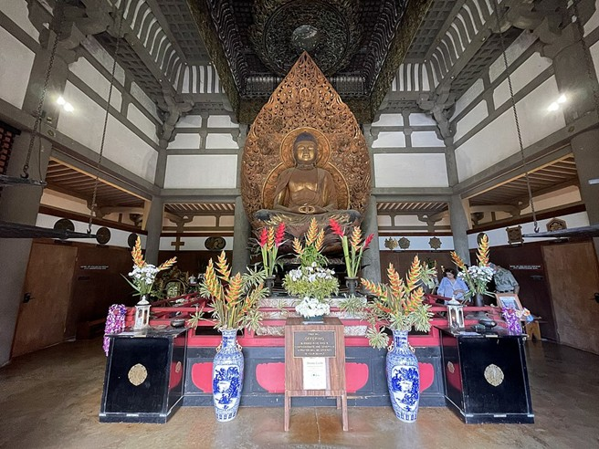

Byodo-In Temple

Byodo-In Temple in Kāneʻohe is one of Hawaiʻi’s most recognizable landmarks — a serene, crimson hall set against the cliffs of the Koʻolau. Though it is not a traditional Hawaiian place name, the site carries significance for Hawaiʻi’s Japanese American community and symbolizes the islands’ cultural heritage. Built in 1968 to honor the 100th anniversary of the first Japanese immigrants arriving in Hawaiʻi, the temple blends ancient Japanese architectural lineage with Hawaiʻi’s own story of labor, family, faith, and plantation-era migration all set in front of the picturesque mountains shaped by time and water.
The temple is a replica of the 950-year-old Byōdō-in from Uji, Japan, a UNESCO World Heritage site. In Hawaiʻi, the architects adapted the structure to the Koʻolau landscape, creating a unique cultural bridge. Buddhist imagery, Japanese garden design, and local flora shape the grounds, while soaring cliffs and Kāneʻohe rains make it feel rooted in place.
Before the Valley of the Temples was developed, the broader Koʻolaupoko region held long-standing Hawaiian names and histories. Kāneʻohe itself comes from a moʻolelo describing a sharp-voiced husband — “bamboo man” or “bamboo husband,” often interpreted metaphorically — and the surrounding ahupuaʻa of Heʻeia and Kaʻalaea housed fishponds, loʻi, and skilled agricultural communities. Before the valley became a memorial park in the 1960s, the land formed part of the larger Bishop Estate and Kāneʻohe Ranch holdings that had been used for agriculture, pasture, and upland resource management in Koʻolaupoko.
Inside, the temple houses an 18-foot golden Amida Buddha, one of the largest outside Japan. The bell house contains a five-foot brass bon-shō cast in Osaka, struck to mark ceremonies and events. Koi ponds, stone lanterns, and landscaped gardens create a meditative atmosphere, blending Japanese aesthetics with the Koʻolau’s dramatic backdrop. The temple grounds are inhabited by animals that have made the valley their home. Black swans glide across the reflection pond, moving slowly among the koi that visitors often feed from small bags sold on the grounds. Peacocks wander the lawns, their calls echoing, and at times startling, the quiet atmosphere. These animals, introduced over the years, have become part of the site’s identity and shape the overall experience.
Though the temple is part of a privately run cemetery, it functions as a quiet retreat for residents and visitors — a place for reflection and quiet enjoyment.

Today, Byodo-In Temple remains a powerful symbol of Hawaiʻi’s multicultural identity. Weddings, memorials, and quiet personal visits all take place under its eaves. While not a traditional Hawaiian structure, its presence in Kāneʻohe reflects the layers of history that shape modern Hawaiʻi: early Japanese immigration, plantation-era labor, Buddhist influence, and the enduring connection between land and community. In its reflections in the koi pond, Byodo-In stands as a testament to how new cultural landmarks become part of Hawaiʻi’s landscape, memory, and broad culture.